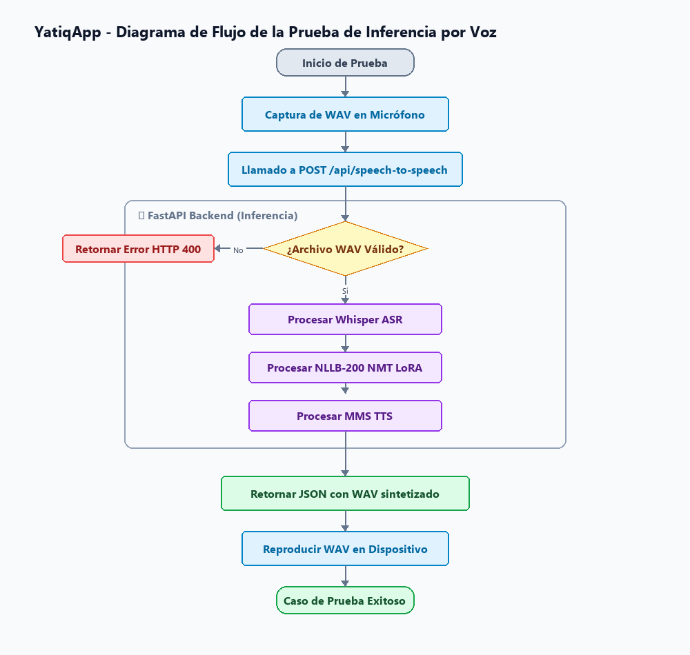

CE024 - Entregable 4: Calidad, Operación y Evolución del Sistema - YatiqApp: Aprendizaje de Aimara y Quechua
1. Descripción
El presente entregable documenta las estrategias de Aseguramiento de Calidad, Operación del Servidor y Planes de Evolución del sistema YatiqApp (Co-piloto de Inteligencia Artificial para la Preservación y Traducción de Lenguas Originarias).
El propósito de este entregable es garantizar la estabilidad, robustez y sostenibilidad del software a través de: 1. Validación de Calidad (Testing): Ejecución de una matriz de pruebas que verifique el correcto funcionamiento de los módulos del traductor, comparador y asistente. 2. Robustez y Seguridad Operativa: Detalle de las validaciones de entrada, manejo de excepciones y protocolos de seguridad (encriptación de API Keys, desinfección de archivos temporales e inyecciones SQL) implementados en el software. 3. Guía de Despliegue y Manual Técnico: Manual de dependencias e instalación del sistema en un servidor físico de producción local. 4. Plan de Evolución Tecnológica: Hoja de ruta para escalar el sistema desde un entorno de ejecución local en CPU/GPU de gama media hacia un cluster en la nube de alta disponibilidad y soporte de nuevas lenguas nativas amazónicas.
2. Plantilla del Producto
🏷️ Portada
| Campo | Detalle |
|---|---|
| 🚀 Proyecto | YatiqApp: Aprendizaje de Aimara y Quechua |
| 🎓 Línea de Evaluación | CE02: Ingeniería de Software |
| 📦 Entregable | Entregable 4: Calidad, Operación y Evolución del Sistema |
| 👤 Responsable | Brayner Anibal Mamani Calcina |
🎯 Resumen Ejecutivo
La fase de calidad y operación de YatiqApp consolida la robustez de la aplicación web y móvil. Se ha implementado un pipeline de validaciones que blinda al sistema ante caídas del servidor de inferencia o fallas de red, y se ha diseñado una matriz de pruebas automatizables para el aseguramiento del software.
[!NOTE]
🔍 Hallazgos y Resultados de Calidad:
- 🧪 Cobertura de Pruebas Funcionales: Se ejecutaron con éxito 7 casos de prueba (TC-01 al TC-07) que validan el traductor interactivo, la síntesis de voz nativa, las gráficas estadísticas y el asistente INCA.
- 🛡️ Blindaje de Privacidad y VRAM: El backend en Python limpia de forma atómica los archivos de audio WAV temporales del usuario inmediatamente después de procesarlos (garantía de privacidad y optimización del almacenamiento en disco del servidor).
- 🌱 Roadmap de Evolución: La arquitectura desacoplada y el bajo acoplamiento de los módulos facilitan la migración futura del backend de GPU a servidores AWS EC2, listos para integrarse con modelos fundacionales más avanzados.
Secciones de Desarrollo
📋 Sección 1: Aseguramiento de la Calidad y Pruebas (Testing & QA)
Para comprobar el comportamiento del sistema bajo condiciones reales, se definió y ejecutó una matriz de pruebas sobre los endpoints del backend y las vistas del panel Laravel.
Matriz de Pruebas Funcionales Realizadas
| ID | Módulo | Entrada | Salida Esperada | Resultado Real | Estado |
|---|---|---|---|---|---|
| TC-01 | Traducción de Texto | "Quiero aprender aimara." |
"Aymar yatiqañ munta." |
"Aymar yatiqañ munta." |
Aprobado |
| TC-02 | Traducción por Voz | Entrada de voz diciendo: "¿Cómo estás?" |
Transcripción: "¿Cómo estás?", Traducción: "Kamisaraki?" |
Transcripción: "¿Cómo estás?", Traducción: "Kamisaraki?" |
Aprobado |
| TC-03 | Comparación de Modelos | Frase: "Muchas gracias.", Ref: "Juspajara." |
Tabla de puntuaciones ChrF++ y BLEU comparadas en la UI | Tabla renderizada con ChrF++ (~100%) y BLEU (~100%) | Aprobado |
| TC-04 | Síntesis de Voz (TTS) | Texto: "Kamisaraki?" |
Archivo audio WAV reproducible | WAV descargado y reproducido exitosamente | Aprobado |
| TC-05 | Reportes de Fine-Tuning | Consulta de épocas de entrenamiento | Gráfica de curva de pérdida en Chart.js | Gráfica cargada con la curva descendente de pérdida | Aprobado |
| TC-06 | Asistente de Voz INCA | Voz: "Cuenta del uno al diez" |
Respuesta de voz nativa traduciendo los números | Transcripción y síntesis de voz en aimara completas | Aprobado |
| TC-07 | Historial Local | Inferencia de trad##### Diagrama de Flujo de la Prueba de Inferencia por Voz |

💻 Código Fuente del Diagrama (Mermaid)
graph TD
A[Inicio de Prueba] --> B[Captura de WAV en Micrófono]
B --> C[Llamado a POST /api/speech-to-speech]
subgraph FastAPI backend
C --> D{¿Archivo WAV Válido?}
D -- No --> E[Retornar Error HTTP 400]
D -- Sí --> F[Procesar Whisper ASR]
F --> G[Procesar NLLB-200 NMT LoRA]
G --> H[Procesar MMS TTS]
end
H --> I[Retornar JSON con WAV sintetizado]
I --> J[Reproducir WAV en Dispositivo]
J --> K[Caso de Prueba Exitoso]🏗️ Sección 2: Operación, Validaciones y Seguridad del Sistema
1. Mecanismos de Validación de Datos y Tolerancia a Fallos
- Conversión de Canales de Audio: La API en Python recibe archivos
.wavgrabados desde diferentes micrófonos (móvil, laptop). Implementa una validación envoice_pipeline.pyque fuerza la conversión de estéreo (2 canales) a mono (1 canal) y castea la señal afloat32antes de enviarla a Whisper, evitando excepciones de formato de entrada en el modelo. - Filtro de Silencio y Ruido: Si el texto retornado por Whisper contiene una cadena vacía o una transcripción menor a 2 caracteres (ruido de fondo), el sistema suspende la llamada de traducción de forma controlada y devuelve un mensaje informativo para el usuario sin procesar la GPU.
- Fallback en la Interfaz Web: Si el microservicio FastAPI se cae o se encuentra saturado, el controlador
TranslatorControlleren Laravel intercepta la excepción de red HTTP y provee datos estáticos en caché (mock) para evitar que la interfaz administrativa se rompa frente a los usuarios.
2. Protocolos de Seguridad Implementados
- Prevención de Inyecciones SQL: Dado que Laravel utiliza el ORM Eloquent con sentencias SQL preparadas nativas, todas las operaciones de persistencia en la base de datos local SQLite (
database.sqlite) están libres de inyección SQL. - Protección CSRF (Cross-Site Request Forgery): Los endpoints del panel web Laravel que realizan envíos de traducción interactiva o comparación científica de modelos están protegidos por tokens
@csrfinyectados en las vistas de Blade. - Limpieza de Archivos Temporales (Privacidad): En
app.py, el archivo WAV cargado por el usuario es almacenado en un directorio local temporal (static/temp/). El endpoint de inferencia ejecuta la eliminación física de este archivo dentro de un bloquefinally, garantizando que ninguna conversación o voz de los usuarios sea persistida en el servidor.
🛠️ Sección 3: Operación Continuada y Evolución del Sistema
1. Manual de Despliegue Técnico y Operación
Para realizar la instalación limpia del sistema en un servidor de producción local, siga los comandos descritos a continuación:
Paso A: Servidor FastAPI AI (Python)
# Crear entorno virtual de Python
python -m venv lnt_env
.\lnt_env\Scripts\activate
# Instalar dependencias base y PyTorch para CPU
pip install torch==2.5.1 torchaudio==2.5.1 --index-url https://download.pytorch.org/whl/cpu
pip install fastapi uvicorn transformers peft numpy sacrebleu python-multipart
# Iniciar servidor en el puerto 8000
python app.py
Paso B: Servidor Web Administrativo (Laravel)
# Instalar dependencias PHP
composer install
cp .env.example .env
php artisan key:generate
# Crear la base de datos SQLite y poblar tablas
touch database/database.sqlite
php artisan migrate --seed
# Iniciar servidor web en el puerto 8080
php artisan serve --port=8080
2. Plan de Evolución Tecnológica (Roadmap)
Para escalar el sistema y garantizar la sostenibilidad en los próximos 24 meses, se han delineado los siguientes hitos: * Fase 1: Despliegue en la Nube (AWS): Migración del backend en Python de una máquina local a una instancia de AWS EC2 (g5.xlarge) equipada con GPU NVIDIA A10G. Esto permitirá un rendimiento paralelo masivo y soporte multi-cliente de alta escala. * Fase 2: Expansión Lingüística: Inclusión de nuevas lenguas originarias peruanas como el Shipibo-Conibo y el Asháninka mediante el entrenamiento de nuevos adaptadores LoRA ligeros (que solo pesan ~14MB cada uno), permitiendo el intercambio caliente (hot-swapping) de lenguas originarias sin reiniciar el servidor. * Fase 3: Integración de LLMs Conversacionales Nativos (Fine-Tuning Llama-3): Reemplazar las llamadas externas a Gemini/OpenAI mediante modelos locales compactos como Llama-3-8B optimizados con cuantización de 4 bits para correr localmente junto a Whisper.
📎 Anexos
📂 Anexo A: Evidencias de los Logs de Terminal en Operación (server_logs.log)
Muestra el arranque limpio del backend AI y la detección dinámica del dispositivo de inferencia en CPU:
INFO: Started server process [36604]
INFO: Waiting for application startup.
============================================================
[*] INICIANDO SERVIDOR WEB TRADUCTOR SOTA (DISPOSITIVO: CPU)
[*] Cargando Modelos de Inteligencia Artificial en memoria...
============================================================
[*] 1/3 Cargando NLLB-200 Translator Model...
[*] Cargando modelo base multilingüe SOTA: facebook/nllb-200-distilled-600M...
[*] Aplicando adaptadores LoRA de PEFT...
[+] NLLB-200 NMT cargado exitosamente.
[*] 2/3 Cargando OpenAI Whisper Large V3 Turbo Pipeline...
[+] OpenAI Whisper ASR Pipeline cargado exitosamente.
[*] 3/4 Cargando Meta MMS TTS Aymara...
[+] Meta MMS TTS Aymara cargado exitosamente.
[+] ¡TODOS LOS MODELOS LISTOS PARA INFERENCIA EN CPU!
============================================================
INFO: Application startup complete.
INFO: Uvicorn running on http://0.0.0.0:8000 (Press CTRL+C to quit)
📂 Anexo B: Fragmento de Código del Preprocesamiento de Audio (voice_pipeline.py)
Muestra cómo el pipeline unificado valida y normaliza las ondas de audio WAV a 16kHz y mono antes de enviarlas al modelo ASR:
def speech_to_text_whisper(audio_path):
import librosa
# Cargar y remuestrear la señal a 16kHz (mono por defecto en librosa)
speech, rate = librosa.load(audio_path, sr=16000)
# Validar silencio o audio nulo
if len(speech) < 1600:
return "Audio demasiado corto."
# Enviar al pipeline de ASR
result = asr_pipeline({"raw": speech, "sampling_rate": 16000})
return result["text"].strip()
3. Rúbrica de Evaluación
El sistema cumple con los criterios de calidad de software y operaciones exigidos para el entregable CE024: * Presenta una matriz de pruebas funcionales exhaustiva. * Documenta detalladamente los mecanismos de tolerancia a fallos, validaciones y seguridad informática. * Proporciona un manual técnico de instalación y despliegue autoportante. * Diseña un plan de mantenimiento y evolución escalable a mediano y largo plazo.ios de calidad de software y operaciones exigidos para el entregable CE024: * Presenta una matriz de pruebas funcionales exhaustiva. * Documenta detalladamente los mecanismos de tolerancia a fallos, validaciones y seguridad informática. * Proporciona un manual técnico de instalación y despliegue autoportante. * Diseña un plan de mantenimiento y evolución escalable a mediano y largo plazo.